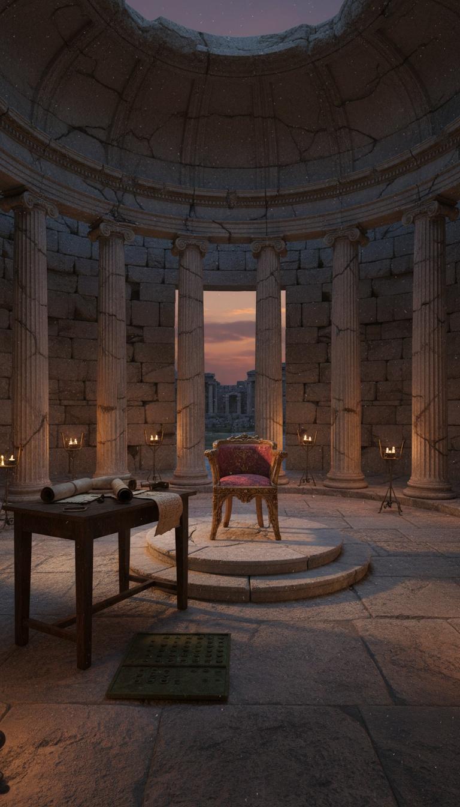

The divinity of Jesus Christ, the central claim of two billion people's faith, was not revealed from a burning bush or whispered by an angel. It was tallied on a Roman vote sheet in the summer of 325 AD, and the final count was 218 to 2.
The two holdouts were exiled. The emperor who called the vote was not even baptized yet. The dogma you inherited has a paper trail, and the paper trail starts in Bithynia.

The Vote That Built a Religion
In May 325 AD, Emperor Constantine I summoned roughly 318 bishops to the city of Nicaea, modern Iznik, Turkey, to settle a theological argument that was tearing his empire apart. The council ran until the end of July. The single question on the table was whether Jesus was of the same substance, homoousios in Greek, as God the Father, or whether he had been created by the Father at a point in time.
The final vote, according to Athanasius of Alexandria's account in De Decretis and Socrates Scholasticus in Ecclesiastical History Book 1, came in at 218 in favor of the homoousios formula. Only two bishops refused to sign. Their names were Theonas of Marmarica and Secundus of Ptolemais, both from the Libyan Pentapolis.
This is the origin of the Nicene Creed, the foundational statement of Christian orthodoxy still recited in Catholic, Orthodox, Anglican, and most Protestant churches every Sunday morning. It was ratified by a show of hands under armed Roman supervision.
The Emperor Was Not Even a Christian Yet
Constantine personally presided over the proceedings. Eusebius of Caesarea describes the scene in Vita Constantini Book 3, where the emperor enters the council hall in imperial purple, glittering with gold and precious stones, and seats himself on a low golden chair.
Constantine was not baptized until 337 AD, on his deathbed, by Eusebius of Nicomedia. He spent his life as a sun-worshiper who tolerated Christianity and saw it as a useful tool for political unification. The Edict of Milan in 313 AD legalized the faith. Nicaea standardized it.
The emperor's role was not pastoral. It was administrative. A fractured church meant a fractured empire, and Constantine needed one creed the way he needed one currency.
Theonas and Secundus: The Two Names Erased
Theonas was bishop of Marmarica, a coastal region in what is now eastern Libya. Secundus was bishop of Ptolemais, the metropolitan see of the Pentapolis, located at modern Tolmeita on the Libyan coast. Both were aligned with the priest Arius, who taught that the Son was created by the Father and therefore subordinate.
When the vote came, they refused to sign the creed. Constantine exiled both men to Illyria, the Roman province covering parts of modern Croatia, Bosnia, and Albania. Arius was exiled alongside them. The penalty for refusing the creed extended further. Constantine ordered Arius's writings burned and made possession of them a capital offense.
The ruins of Ptolemais are still visible today, partially excavated, with the remains of the Byzantine-era basilica sitting on the Mediterranean coast. The bishop's name does not appear on any plaque. He lost the vote.
The divinity of Christ was not revealed at Nicaea. It was ratified by 218 men in a room while an unbaptized Roman emperor watched from a golden chair.
The Document Itself
The original 325 creed is shorter than the version most Christians know today. The longer Niceno-Constantinopolitan Creed comes from the First Council of Constantinople in 381 AD, which added the clauses about the Holy Spirit. The 325 text focused almost entirely on hammering down the Son's relationship to the Father.
The operative line, in the original Greek, declared Jesus to be gennethenta ou poiethenta, homoousion to Patri. Begotten, not made, of the same substance as the Father. The word homoousios was the bomb. It does not appear in the New Testament. It was a Greek philosophical term, and several bishops at the council openly disliked importing pagan metaphysics into Christian doctrine.
They signed anyway. Eusebius of Caesarea, in a letter preserved by Socrates Scholasticus, admitted he signed the creed despite reservations because the emperor demanded unity. He explained the word to himself in ways that let him sleep at night.
What Arius Actually Taught
The losing position was not pagan or marginal. Arius was a senior presbyter in Alexandria, trained at the school of Antioch, and his teaching had wide support across the eastern empire. He argued that the Father alone was eternal and uncreated. The Son was the first and greatest of created beings, divine in function but not in essence.
This view was not a fringe heresy. After Nicaea, Arianism rebounded so hard that by 359 AD most bishops in the empire were Arian or semi-Arian. Constantine's son Constantius II was an Arian. Several Germanic tribes, including the Goths and Vandals, were converted by Arian missionaries and remained Arian for centuries.
The Nicene victory was not theological inevitability. It was political muscle, repeated and enforced over the following sixty years by successive emperors and councils, including Constantinople in 381 AD under Theodosius I, who finally made Nicene Christianity the state religion of the entire Roman Empire by the Edict of Thessalonica.
What the Receipts Say
The vote happened. The Wikipedia entry on the First Council of Nicaea, drawing on the same primary sources, confirms the count and the exiles. Athanasius, who attended as a young deacon assisting Bishop Alexander of Alexandria, recorded the dissenters by name in De Decretis. Eusebius described the emperor's personal presence in Vita Constantini Book 3. Socrates Scholasticus, writing roughly a century later, preserved the procedural details in Ecclesiastical History Book 1.
The number 318, the traditional count of attending bishops, was later given symbolic weight by linking it to Genesis 14:14, where Abraham takes 318 trained men to rescue Lot. The actual count was approximate. Modern historians estimate between 250 and 318 bishops actually attended.
None of those numbers change the structure. A Roman emperor convened a council. The council voted. Dissenters were exiled. The result became state law.
The Nicene Creed is recited every Sunday by hundreds of millions of people who have never heard the names Theonas of Marmarica or Secundus of Ptolemais. They have never been told that the foundational claim of their faith was decided by a margin and enforced by a sword.
The next council, Constantinople in 381 AD, expanded the creed. The Council of Ephesus in 431 AD voted on whether Mary was the Mother of God. Chalcedon in 451 AD voted on whether Christ had one nature or two. Each vote produced new exiles, new heretics, new churches breaking off into the desert. The pattern did not stop at Nicaea. It started there.
Which raises the question nobody wants to ask. If the divinity of Christ was decided by a vote of 218 to 2 under imperial pressure, what else in your inherited creed has a tally sheet behind it?
Books that informed this investigation
As an Amazon Associate, Hidden Epoch earns from qualifying purchases. Cost to you: nothing.
Research safely
The VPN we use to research without being tracked. First 3 months free.
Get NordVPN →